01 · The story
A stray cat, a white cat, and his past lives.
Nyx is a black stray who falls asleep in an alley and dreams his way through past lives: a cold lab, a busy market, a pampered home. A glowing white cat keeps appearing just ahead of him. At the end, on a rooftop at sunset, he learns who she is and finally rests.
I designed the level as one story arc in six scenes: setup, hook, three developments, a turn and a resolution. Every scene had to move the story and the gameplay forward together.
- SetupAlleyThe Opening → The Path
- HookDream stateThe Door
- Development 1Lab mazeThe Maze
- Development 2MarketDoor at the end
- Development 3Luxury homeThe Chamber
- Turn + ResolutionRooftopThe Summit
02 · The plan
I planned every scene on paper first.
For each scene I wrote down the goal, the environment, the obstacles, the spatial archetype and what the player is trying to do, then sketched a rough top-down layout.
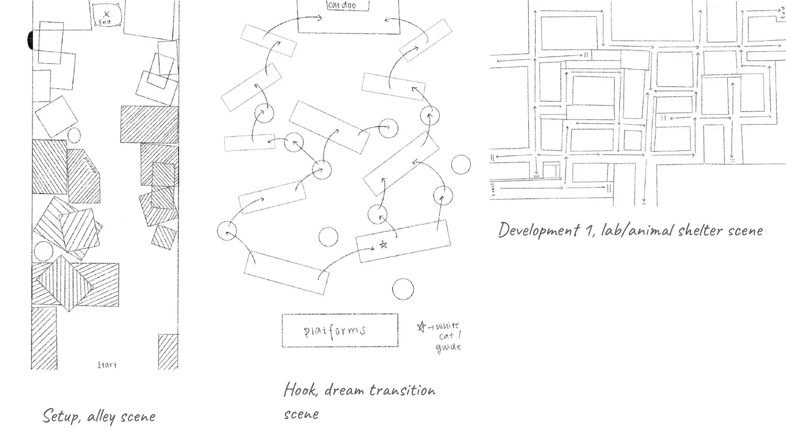
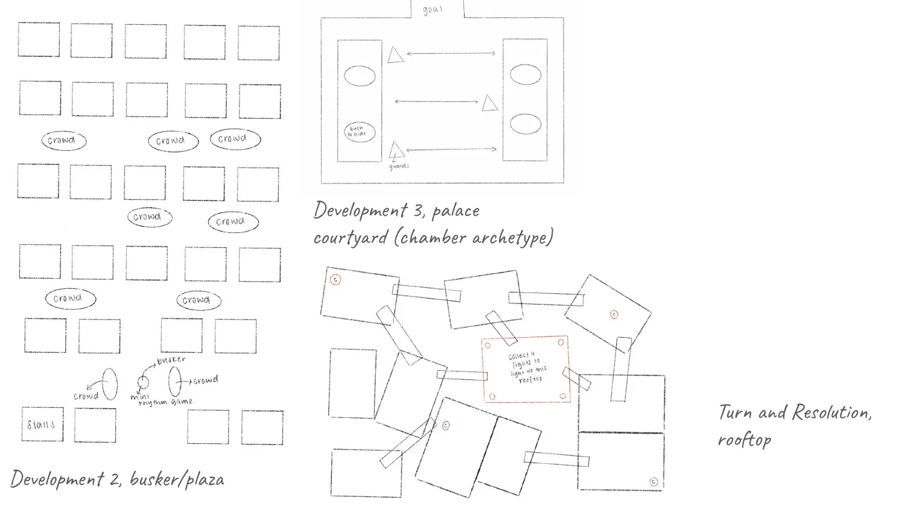
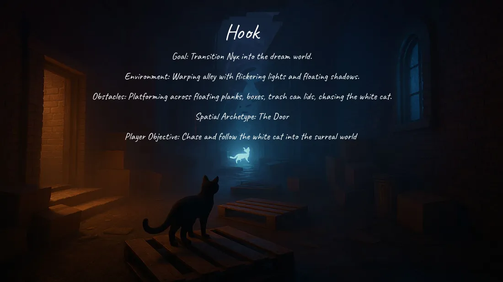
03 · The level
Six scenes, one feeling each.
Alley: lonely, quiet, safe
A dim alley at night where you learn to move. Boxes make a winding path to a pillow, and the white cat appears for the first time, then vanishes.
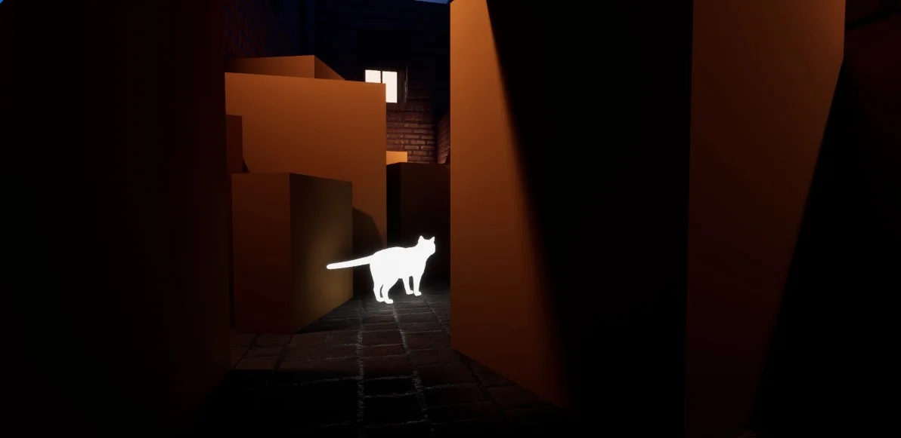
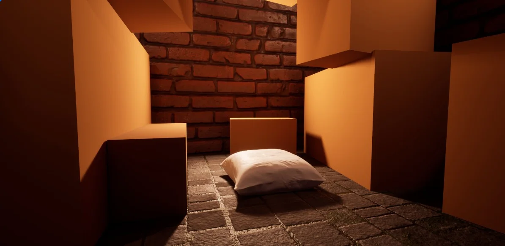
Dream state: falling into the dream
A pink haze of floating boxes, planks and bin lids. It’s the only real platforming in the level, and the hardest part to balance.
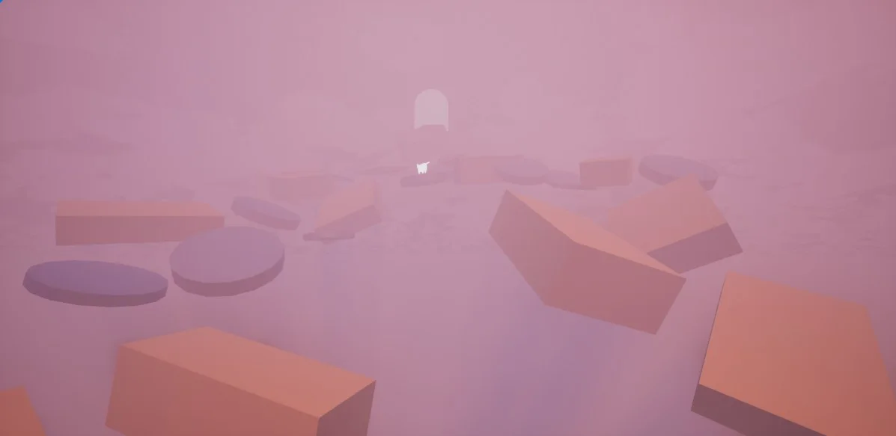
Lab maze: trapped
A cold, wet lab you have to escape. Lighting guides you through, but some lit corridors are dead ends on purpose, so you feel lost the way Nyx did. A “Find 3!” goal sends you into those dead ends to collect memories.
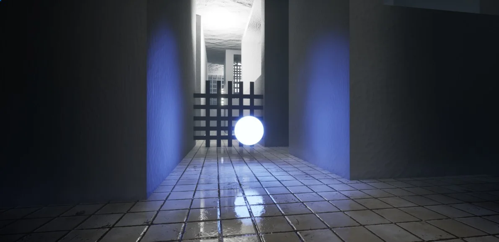
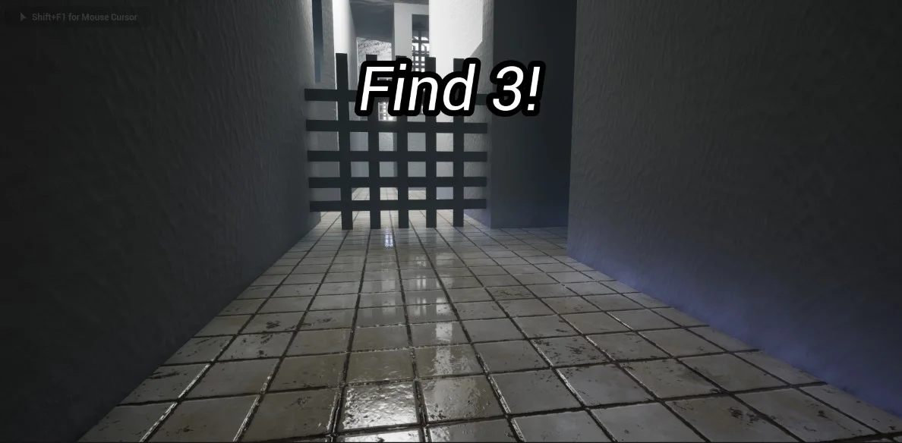
Market, luxury home and rooftop
The market is busy with roaming people. The luxury home is a cat playground with a countdown: you can climb anything, but you can’t leave until time runs out. The rooftop at sunset is the vista where the story ends.
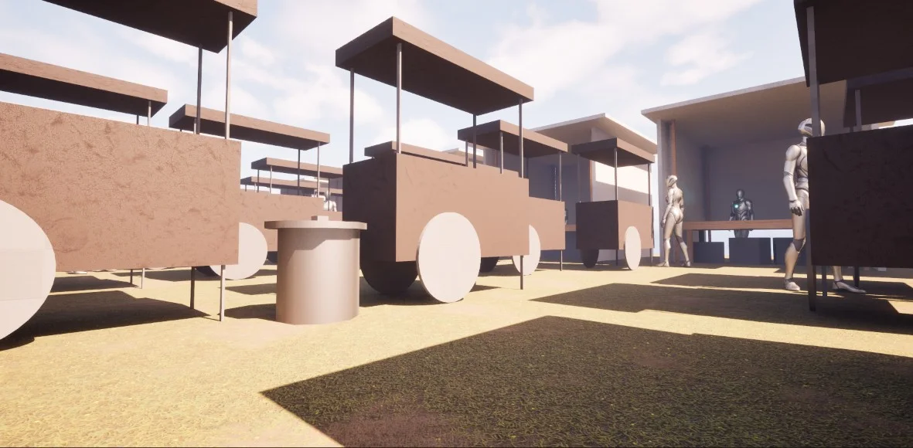
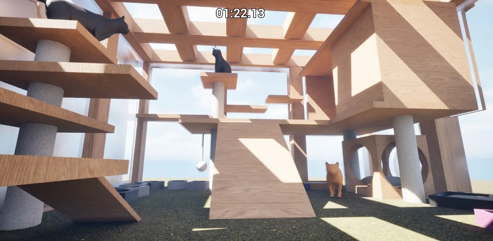
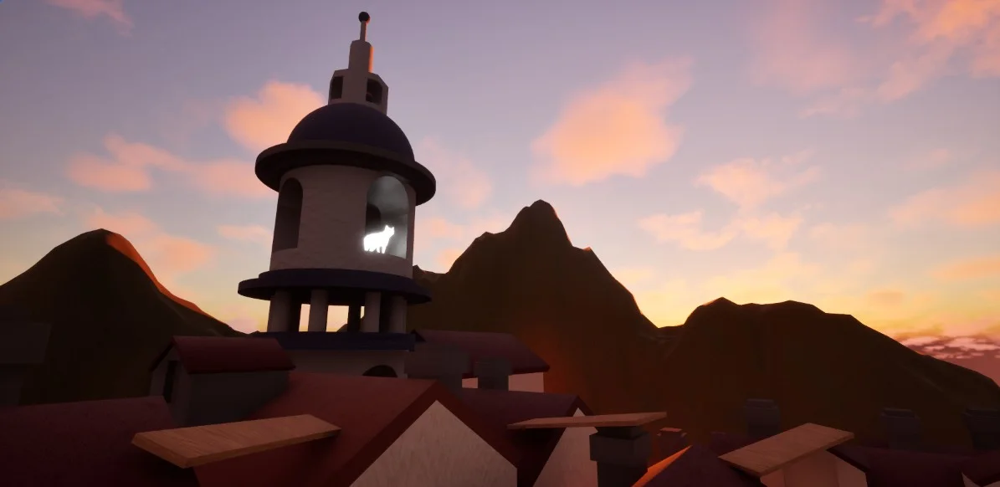
04 · Guidance
Leading the player without telling them.
The white cat. She appears ahead of you, then disappears when you get close, so you always know which way to go next. It also sets up the story twist.
Layout. In the alley, I placed boxes to make a winding path instead of walls.
Light. In the lab, light marks the way out, but some lit areas are dead ends, to make the maze disorienting.
Short text goals. Simple on-screen text, like “Find 3!”, explains abstract goals in a scene.
05 · Playtests
Six playtests, three builds.
I ran six playtests with classmates across three builds. I watched where they hesitated, got lost or got frustrated, wrote it down, then fixed the biggest problems before the next build.
What players said
- “The parkour was too difficult, I nearly gave up.”
- “I found the maze exit almost immediately.”
- “I walked straight through the market.”
- “I got stuck and thought the game was bugged.”
What I changed
- Simpler jumps and a respawn system in the parkour.
- Collectibles in the maze’s dead ends, and a harder-to-find exit.
- Staggered stalls and roaming people in the market.
- Slower movement (500 → 400), and a way back up on the rooftop.
06 · Trade-offs
The calls I made, and what they cost.
Scope was tight, so every scene was a choice between doing more and doing it well.
How should players be guided?
A white cat that appears and vanishes (chosen)
It guides and tells the story at the same time. Players called it “visually curious.”
Arrows, signs or a waypoint (not chosen)
Clearer, but it would break the dreamy mood and say nothing about the story.
How hard should the parkour be?
Forgiving jumps plus respawns (chosen)
The level is about feeling, not skill. After the change, falls went from 5 to 0 and testers called it “challenging but fair.”
Keep it hard, like a platformer (not chosen)
Some players liked the challenge, but one said they would have quit.
What happens in the market?
Explorable stalls and roaming people (chosen)
Achievable in the time I had, and it made the space feel alive.
The rhythm mini-game from my plan (not chosen)
More interactive, but I cut it to finish every scene instead of leaving the last two broken.
What worked
- Playtesting every build: three early testers got stuck in unfinished scenes, which pushed me to finish the whole level before polishing.
- The lab maze. Testers said it “made sense” as a lab or shelter, and the collectibles got them exploring dead ends.
- The rooftop vista. One tester stopped to admire the sunset.
What I’d change
- The market still ends too quickly; it needs a light mechanic or objective.
- Testers finished exploring the luxury home before the timer ran out. I’d shorten the timer or add more to find.
- The rooftop ending felt underwhelming to one tester. I’d build a stronger final moment with the white cat.